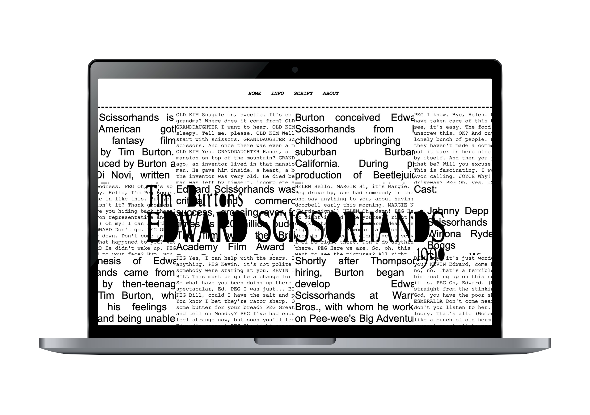
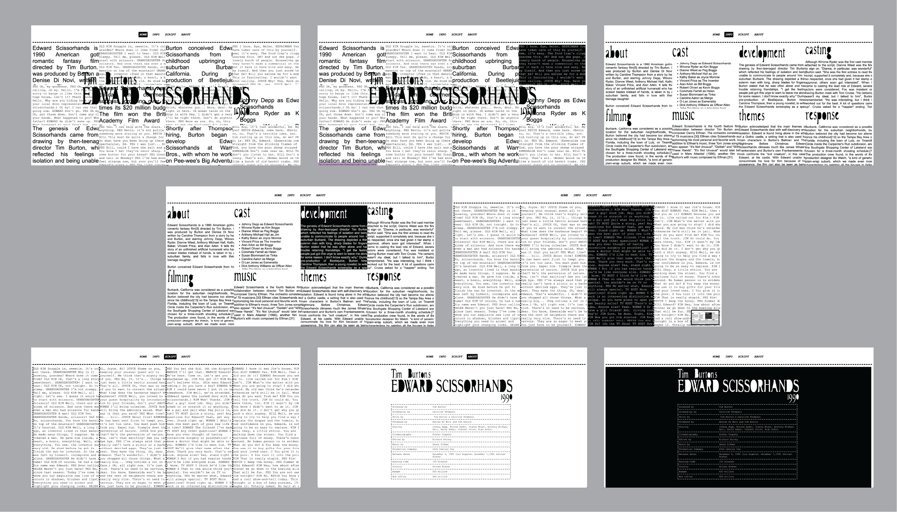

2025
HTML and CSS
Click this clip to experience Edward Scissorhands website!

This coding project involved creating a website inspired by Edward Scissorhands, focusing on its aesthetics through color, typography, and layout. Using HTML and CSS, I applied the inverse hover feature to emphasize the film’s theme of isolation.
I drew inspiration from paper-cut collages and a dramatic black-and-white aesthetic to reflect Edward’s “cutting” nature. The website included a homepage, an information page, the movie script, and an “About the Movie” section, offering a cohesive and immersive experience.
Click this clip to experience Edward Scissorhands website!
